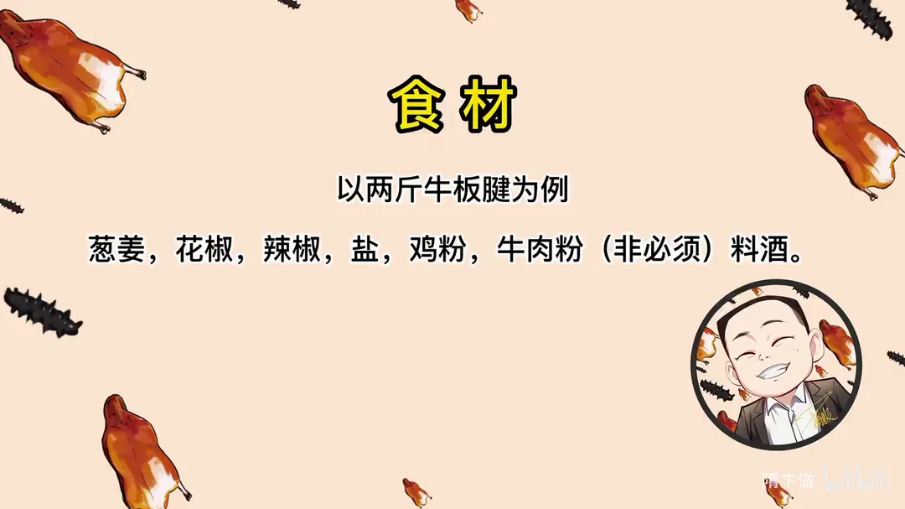
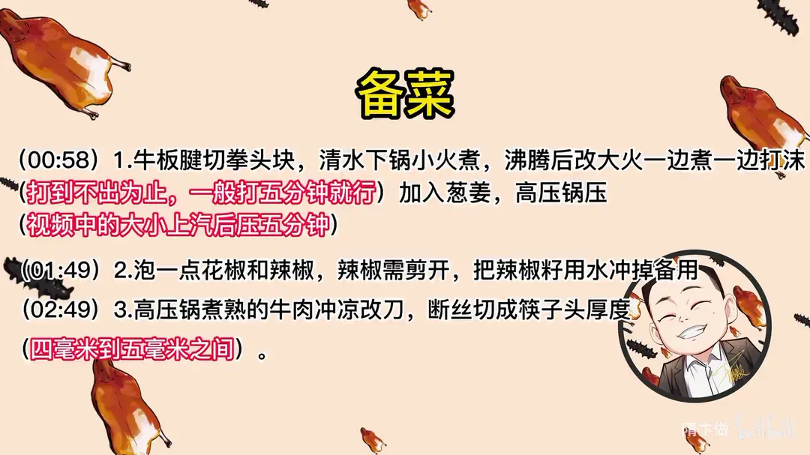
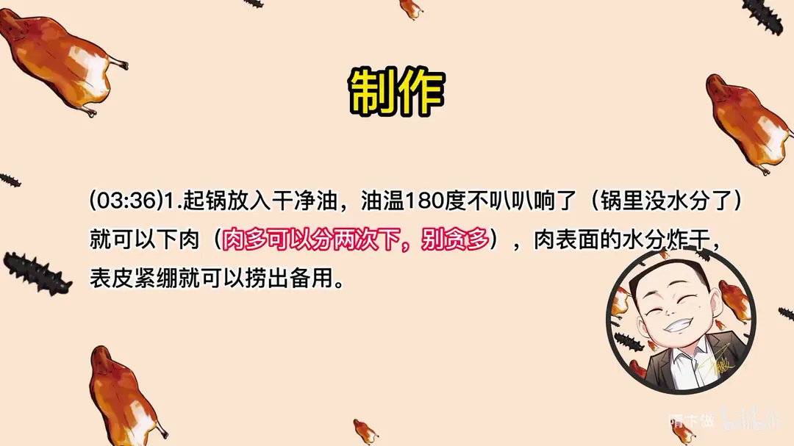
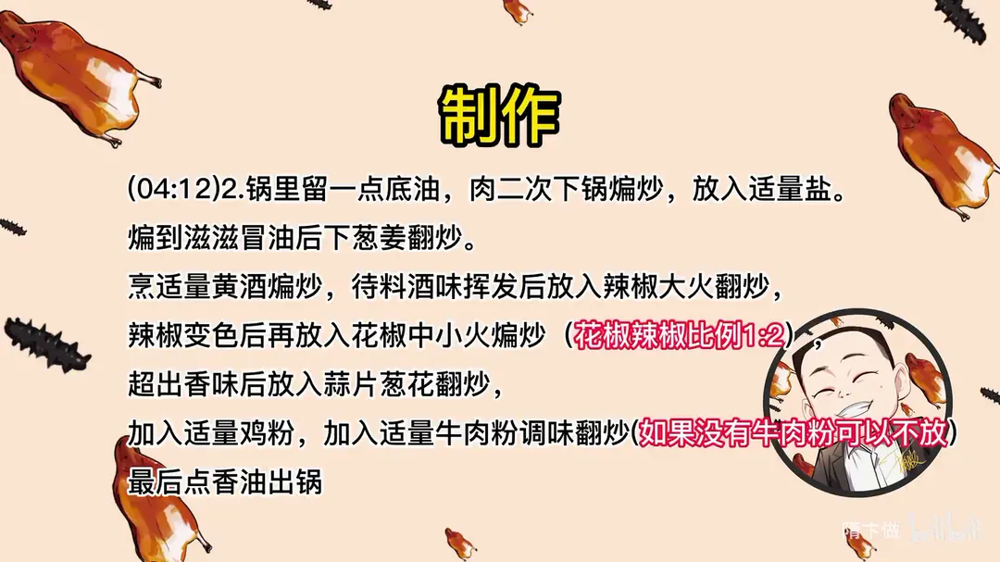
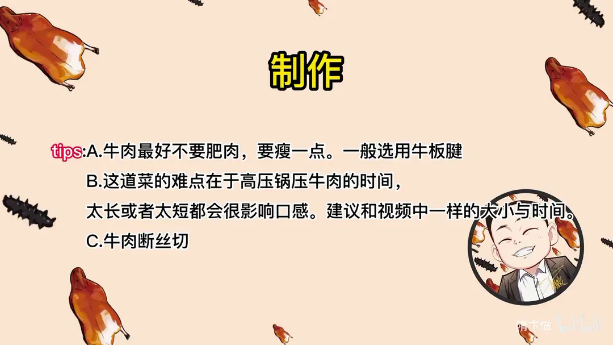

干巴牛肉
隋卞一做。两斤牛板腱先煮后压、冲凉断丝，再复炸复煸，成菜干香有嚼头。难点是高压时间，以及花椒与辣椒 1:2 的比例，最后点香油出锅。
原视频：https://www.bilibili.com/video/BV14s4y1D7VN
食材
牛板腱、葱姜、花椒 等 8 样
| 类别 | 用料 | 用量 |
|---|---|---|
| 主料 | 牛板腱 | 两斤 |
| 煮制 | 葱姜 | 适量 |
| 调味 | 花椒 | 适量 |
| 调味 | 辣椒 | 适量 |
| 调味 | 盐 | 适量 |
| 调味 | 鸡粉 | 适量 |
| 调味 | 牛肉粉（非必须） | 适量 |
| 调味 | 料酒 | 适量 |
步骤
- 切块煮制：牛板腱切拳头大小的块，清水下锅小火煮，沸腾后改大火一边煮一边打沫，打到不出沫为止，一般打五分钟就行。
- 加葱姜压：加入葱姜，用高压锅压，按视频中的大小上汽后压五分钟。
- 泡辣椒：泡一点花椒和辣椒，辣椒需剪开，把辣椒籽用水冲掉备用。
- 改刀：高压锅煮熟的牛肉冲凉改刀，断丝切成筷子头厚度，约四毫米到五毫米之间。
- 炸肉：起锅放入干净油，油温 180 度不叭叭响了、锅里没水分了就可以下肉，肉多可以分两次下、别贪多；肉表面的水分炸干、表皮紧绷就捞出备用。
- 二次煸炒：锅里留一点底油，肉二次下锅煸炒，放入适量盐，煸到滋滋冒油后下葱姜翻炒。
- 调味出锅：烹适量黄酒煸炒，待料酒味挥发后放入辣椒大火翻炒，辣椒变色后再放花椒中小火煸炒，花椒辣椒比例 1:2；炒出香味后放蒜片葱花翻炒，加适量鸡粉、适量牛肉粉调味，没有牛肉粉可以不放，最后点香油出锅。
小贴士
- 牛肉最好不要肥肉，要瘦一点，一般选用牛板腱。
- 这道菜的难点在于高压锅压牛肉的时间，太长或者太短都会很影响口感，建议和视频中一样的大小与时间。
- 牛肉断丝切。
讲解要点
难度：★★★☆☆（难点在高压时间和两次火候：压过头肉就散、炸过头肉就柴）
为什么这么做
- 只用清水小火煮、边煮边打沫五分钟：小火才能把血水慢慢浸出来，沫打干净、汤清，肉才不发黑、不带腥。
- 高压只压五分钟：板腱本身是筋膜多的部位，压太久胶质全化开，肉就软散没法「干巴」；时间刚到就要关火。
- 煮熟立刻冲凉：热肉纤维松，冲凉后收紧，切四到五毫米的薄片才不会碎烂。
- 断丝切：逆着纹路下刀把肌纤维切断，嚼起来才利落；顺丝切会越嚼越老。
- 先炸后煸、分两次下锅：油里先炸掉一部分水分，让肉「干巴」；回锅煸是为重新吸收新味道，一次下太多油温骤降，只会浸油不脆。
- 花椒与辣椒按 1:2、分次投料：泡过水的辣椒花椒带着水分，煸干的过程就是让肉一次次吸水吸味；油变清说明水分煸干了，就是下料的时机。
- 黄酒在肉最干时烹入：盐一时化不开，黄酒一下锅既化盐又带香气，被干巴的肉迅速吸进去。
容易翻车
- 高压别超时，多一分钟肉就烂，后面炸和煸都撑不住。
- 油温不够、或肉一次下太多，炸出来发软油腻，不是干香。
- 辣椒花椒要中小火慢煸，火大先糊的是花椒，苦味盖住一切。
- 补味用鸡粉、牛肉粉即可，前面已经撒过盐，最后再补盐容易过咸。
原片尾卡





原片文案
AI 字幕校准稿
做饭做菜也有一段时间了，怕你们看我烦，今天请一位嘉宾。我最尊敬的冯哥来了。冯哥店里那道干巴牛肉，三十八块，是真不会做。老冯有招——底下垫一层花生米。牛肉煮熟了之后切成片，下锅一炸，搁上泡过的花椒和干辣椒，热菜冷吃。
今天我就让你们看看我店里的干巴牛肉到底怎么做。牛前腿的板腱改成这样的块，不用焯水，也不用炖，直接下锅清水煮。一锅清水放进去，小火慢慢把肉的血水浸出来。味出来之后开始打沫，沫会持续不断地出，打到不出沫为止，就这样持续照五分钟左右地打。
大火烧着，等它不出沫、汤也清了，加入葱姜、盐、料酒，别的什么都别放。五分钟，多一分钟都别干，过了之后就没法吃了。辣椒提前用温水泡透，顺着这一刀剪开就行。这辣椒籽可以冲一冲，稍微一点没事，别多了。
到点直接关火，牛肉的香味已经比较浓了；要是时间宽裕，就小火多煮一会儿，让它把香味出透。冲凉，然后改刀切成筷子头的薄厚，四毫米到五毫米之间，拿筷子比一下。好多人不知道怎么掌握火候，它刚好让牛肉断生，肉过了就不好吃，肉生了也不好吃。这里有一个诀窍：牛肉一定要断着丝切。纹路看得很清晰，顺着叫顺丝，这么切就是切断丝。
现在快速烹制。来点干净油，烧到七成热，一百八十度左右，不叭叭响了就可以下肉。一次不行分两次，别贪多，贪多就不脆了。炸就是让肉里的水分失去一部分，煸的时候再重新吸收新的味道。表面稍微一绷皮、水分炸干就行，捞出备用。
锅里留点底油，把肉放回去煸炒。这时候先加盐，盐一撒，一见了盐它就香了。牛肉里还有水，还得煸干，这锅肉炒完最后能出三两就不错了。看，越煸底油越多，滋滋冒油，这时候就可以了，下葱姜。葱姜气味一出来就烹黄酒，刚才的盐没化，黄酒一进去盐就化了，肉也是干巴的，一会儿就把黄酒和咸味吸进去。把黄酒煸透、煸干净。
这时候该煸辣椒了。麻辣口味自己掌握，辣椒和花椒的比例是一份花椒、两份辣椒。分次投料的时候，辣椒里有水、花椒里也有水，所以牛肉不会缺水，主要是把花椒辣椒的水分煸干，肉也干不了，味道就这么一次次往肉里吸。中小火慢慢煸，一没水分了看锅底就看出来，油就清凉了。
最后放蒜片，剩这点葱花也放进去。尝一下味道，少来一点鸡粉、少来点牛肉粉，这是最后补味用的，盐味够了就不用再加盐。最后点一点香油出锅。
这个牛肉刚入嘴的时候表面干巴筋道，嚼着嚼着牛肉里还有点汁水，味道咸鲜，夹杂着辣椒的味道，还有干辣椒和花椒煸到一定火候产生的那种香味，葱姜蒜几种调味料混合到这个味道里，有一个复合的味道，起到画龙点睛的作用。这个菜一次多做两菜，冰箱里放个两三天没问题——不过我跟您说，这肯定剩不下。这可以凉吃也可以热吃，热吃跟凉的那俩不太一样。